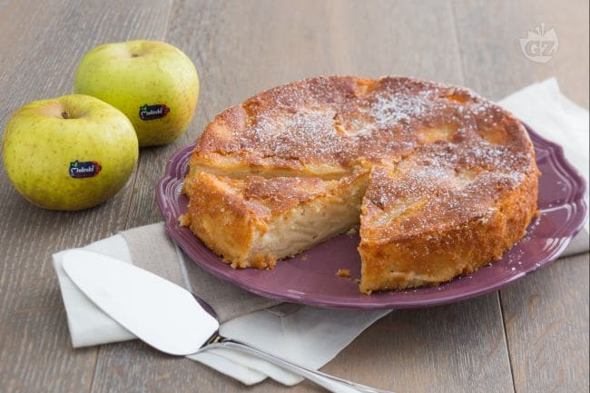

Torta di mele

Description
La torta di mele della propria nonna è un ricordo che la maggior parte di ognuno di noi conserva nel cassetto dei ricordi della propria infanzia.
La ricetta della torta di mele sicuramente rappresenta la ricetta della nonna per antonomasia da conservare e custodire gelosamente.
Ingredients
- 300 gr di farina 00
- 3 mele
- 250 gr di zucchero
- 3 uova
- 70 gr di burro
- 200 ml di latte
- 16 gr di lievito per dolci
- 1 limone
Steps
- Lavate le mele, sbucciatele e toglietegli il torsolo. Tagliate le mele a spicchi e mettetele a macerare con poco zucchero e del succo di limone in un recipiente.
Montate i tuorli con lo zucchero fino ad ottenere una crema chiara e spumosa. Lasciate da parte gli albumi.
- Lavate le mele, sbucciatele e toglietegli il torsolo. Tagliate le mele a spicchi e mettetele a macerare con poco zucchero e del succo di limone in un recipiente.
Montate i tuorli con lo zucchero fino ad ottenere una crema chiara e spumosa. Lasciate da parte gli albumi.
- Versate il composto in una teglia imburrata e infarinata del diametro di circa 24 cm.
Avete ampia scelta su come decorare la vostra torta di mele, l’impasto infatti dovrebbe risultare sufficientemente denso da poter disporre sopra tutta la superficie le fettine di mela rimaste senza che affondino all’interno della torta. In alternativa potete inserirle verticalmente a gruppi di 3/4 all’interno della torta.
Cuocete la torta di mele in forno già caldo statico per circa 40 minuti a 180 °C. Prima di sfornarla fate sempre la prova stecchino.